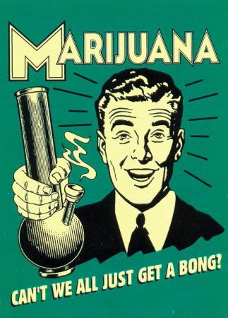

MARIJUANA
OVERVIEW:
Marijuana is derived from the Indian hemp plant,
Cannabis sativa, a member of the Cannabaceae family
and the Urticales (nettle) order. Some botanists claim that
this genus contains as many as three other species: C.
indica, C. ruderalis, and even Humulus lupulus, the hops
plant. Other botanists insist that the differences between
plants reflect simple variations, not different species.
Cannabis sativa is dioecious, which means that it
produces both male and female plants. All types of
cannabis strains�both male and female plants�produce
THC, the active ingredient that, when smoked or ingested,
intoxicates the user.
This
substance can be detected in
every
part of the plant, including the stems. The
highest
concentration
of THC,
however,
is found in the resin,
which
is most abundant in the flowers of female plants.
From China, marijuana spread eastward. In India,
its use as a drug began around 1,000
B.C
., and it soon
became an important part of Hindu religious rituals and
meditation. The Artharvaveda, one of the four Vedas, or
sacred Hindu texts, portrays cannabis as a divine elixir
that eases anxiety. Ancient Indian physicians prescribed
marijuana for malaria and rheumatism, presumably for
its analgesic qualities. Other early medical indications�for
�blood clearing� and to encourage the formation
of pus (thought to be a sign of healing)�say
more
about the state of medicine during those centuries
than
cannabis�s
therapeutic value. The
Persians and
Assyrians
also used cannabis as a drug, as reflected in
tablets
from the eighth and seventh centuries
B.C.,
respectively.
CHEMICAL/ORGANIC COMPOSITION:
More than 400 chemical compounds have been
identified in marijuana. Approximately 60 of these are
unique to the cannabis plant, substances called
cannabinoids. Of the cannabinoids, a group of isomers
(chemically similar substances) called tetrahydrocannabinols
(THC) are thought to be the most psychoactive.
These are
?
1
�THC (also called ?
�THC)
and ?
6
�THC (also called ?
�THC). Other cannabinoids
include cannabidiolic acid (CBDA), cannabidiol
(CBD),
and cannabinol (CBN). Their
role in marijuana
intoxication
is less well understood. The
amount of
THC
produced depends on the strain of cannabis and
on
environmental factors such as growth, harvest, and
storage
conditions.
8
9
TYPES
Bhaang
Bhang is the mildest of India�s cannabis concoctions,
and is usually eaten as a sweetmeat or consumed
as
a beverage. It consists of dried cannabis leaves that
are
ground to a fine paste, mixed with a combination of
sugar,
spices, and fruit. Because the cannabis is ingested
orally,
the drug�s
effects
are felt more slowly than when
it
is smoked. In India, bhang is a poor man�s
drug and is
used
the way beer and wine are in the West.
Like alcohol,
bhang is often a part of social and religious occasions.
Bhang is the weakest of all cannabis preparations
and
generally has a low THC
concentration.
Ganja
Ganja, like marijuana, is made from THC-rich
cannabis flowers and resin. It is smoked (sometimes
mixed with tobacco) in a pipe, a cigarette, or in bidis,
small Indian cigars. Like bhang, ganja is favored by the lower classes of Indian society. It is usually at least
twice as potent as bhang, with a higher THC concentration.
Charas is the nearly pure concentrated resin of the
cannabis plant. Like ganja, it is smoked, but its THC
concentration is far higher.
Marijuana
Marijuana is the dried tobacco-like
leaves and flowers of the cannabis plant and is the most
common form of the drug in the United States. Marijuana
is usually smoked, although it is occasionally baked
into
foods such as brownies or brewed as tea for drinking.
Different
grades of marijuana have different
levels
of
THC.
Sinsemilla (Spanish for seedless�), which con-
tains mostly flowers and buds with few or no seeds, is
considered the most potent form of marijuana.
Hashish
Hashish, like charas, hashish is a highly potent,
concentrated cannabis resin that has been collected,
dried, and pressed into bricks. It is sometimes mixed
with tobacco or marijuana and is usually ingested by
smoking.

Mental Effects
Users often experience a mellow sense of wellbeing
and relaxation that makes them feel expansive,
creative,
and more sensitive to all types of stimuli. Perception
of time slows, and ability to gauge distance,
depth,
and speed accurately is distorted. Users can also
spiral
downward into anxiety,
paranoia, panic attacks,
and
hallucinations. This
effect
is more pronounced when
larger
doses of THC
are ingested, such as when hashish
or
other more concentrated forms of marijuana are used.
Higher
doses are also possible when marijuana is eaten
rather
than smoked; this occurs when more of the drug is
ingested
before it can be metabolized.
Within seconds of entering the bloodstream, the
cannabinoids in marijuana bind to special areas in the
brain called THC receptors. These regions, located
throughout the brain, are heavily concentrated in the hippocampus,
which controls learning and memory.
This
means
that one of marijuana�s
most pronounced effects
is
its interference with the ability to form short-term
memories.
A
1996 study published in the Journal of the
American Medical Association showed that heavy marijuana
users, defined as those who ingest the drug on a
daily
or nearly daily basis, scored significantly lower on
learning
and other tests.
Physiological Effects
While it is true that most people smoke marijuana
precisely for its mental effects, they may not be aware
of the physical changes that accompany the high. One of
the drug�s first effects is to raise the heart rate and blood
pressure. The eyes become bloodshot and the pupils dilate; the mouth and throat also become dry. The
appetite is stimulated, and users often become unusually
hungry.
At the same time, the cannabinoids in marijuana,
already at work in the hippocampus, bind to THC receptors
in other parts of the brain, including the basal ganglia,
which govern the body�s
involuntary muscles, and
the
cerebellum, which controls coordination and sense of
balance.
These
changes relax muscles all over the body,
slowing
reaction time and impairing the body�s
ability to
move
efficiently.
When
the high wears off,
fatigue and
torpor
replace the creativity and hyperawareness users
may
experience initially.